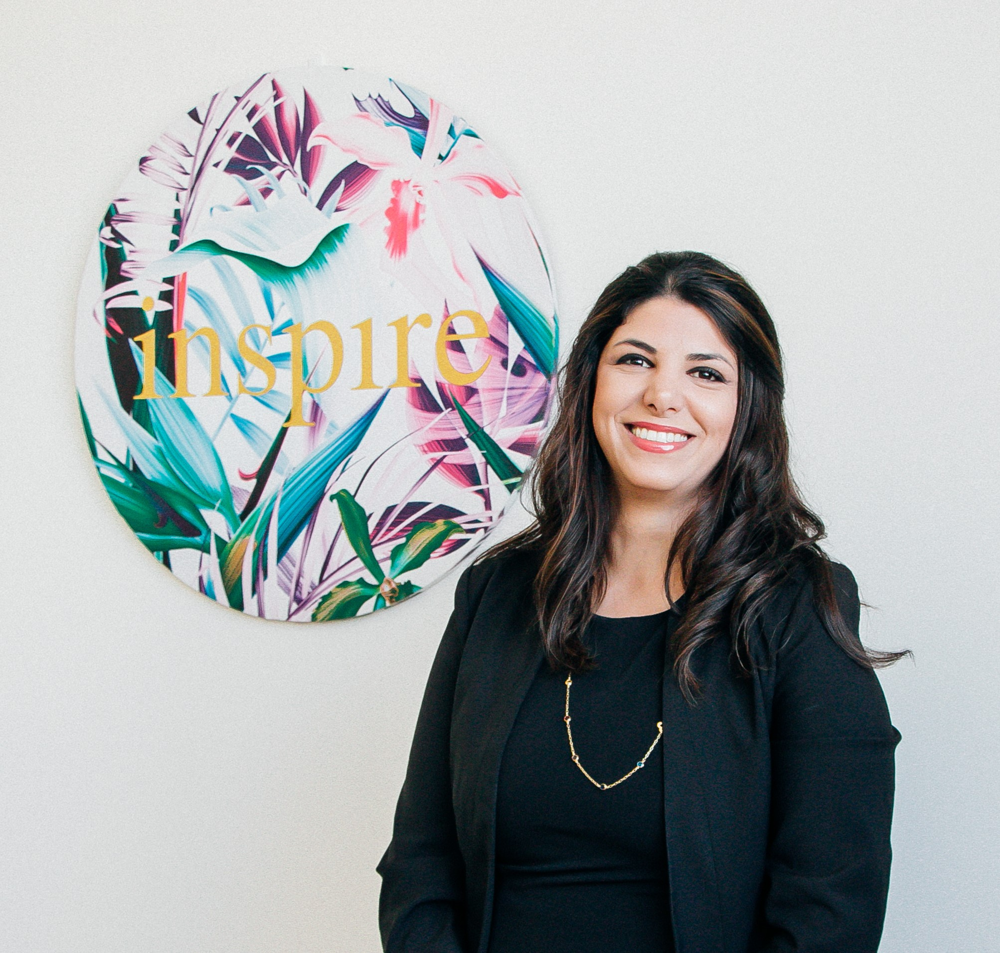
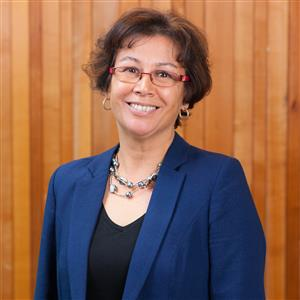
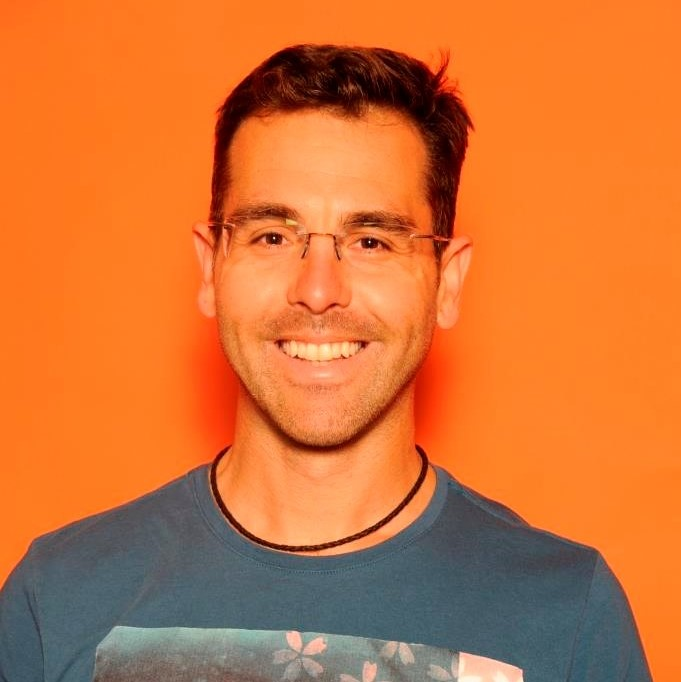
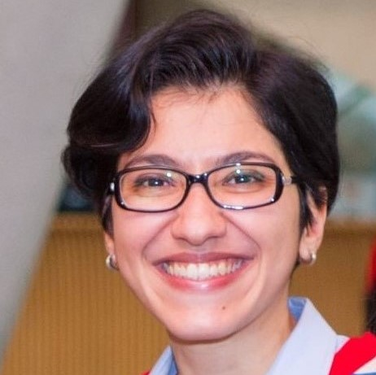

Our Team
|  | Mahsa MohagheghDr Mahsa Mohaghegh is a Director of Women in Technology and Senior Lecturer in AUT’s School of Engineering, Computer and Mathematical Sciences. She is a well-recognised leader in AI and machine learning and is also the founder of the charitable trust She Sharp, a women’s technology networking and learning group, where she works to encourage young New Zealand girls to consider what a career in technology offers. She was named winner of the Emerging Leader category in the 2013 Westpac Women of Influence Awards and was one of ten finalists for 2018 Kiwibank New Zealander of the Year. In 2019 she was the Champion Award winner of the YWCA Equal Pay awards, and in 2020 presented with the Massey University Distinguished Alumni Award. |
|  | Leanne BintLeanne Bint has worked within AUT’s School of Engineering, Computer & Mathematical Sciences for 10 years. She works in an External Relations and Development Role which aligns with AUT’s strategic directions. She is skilled in relationship and partner development, industry and stakeholder management, sponsorship, event management, and enjoys contributing to a variety of projects. She enjoys supporting women in technology due to the exciting career paths and opportunities in these industries. Women also need to ensure they contribute to the development of technologies so these are produced with all users in mind. |
 |
Tim AndersonTim Anderson is a Senior Lecturer in the Department of Mechanical Engineering and works extensively in the field of renewable energy and solar energy in particular. He has a passion for the humanistic issues that are central to engineering as a profession, and the role that engineers can play in society. |
|  | Lorenzo GarciaLorenzo Garcia is a lecturer at AUT and a BioDesign Engineer, specialized in musculoskeletal biomechanics but also with extensive experience in technology transfer, innovation management and design of medical devices. He has a background in Applied Physics, Mechanical Engineering and Biomedical Engineering. Interrelated with his interest in healthcare, quality of life and sustainability, he has combined his role as technology manager with his passion to fulfil bioengineering needs in two areas: healthcare technology and ocean technology. He is a supporter of diversity, wellbeing and inclusion in engineering and among other initiatives he is actively part of the DCT Women in Technology to inspire and support particularly women in the sector. |
|  | Sam MadanianSam Madanian is a lecturer and researcher at AUT, department of Computer Science with a multidisciplinary background and profile. Her passions are teaching and research in the fields of health informatics and project management. Her industrial experience, coupled with my current research interests, allows her to bridge the gap between academia and industry and putting the academic knowledge into practice. She strongly believes in diversity and equity in STEM fields and her main objective of joining this group is to support and empower our female students in STEM and encourage more females in the STEM pathway. |